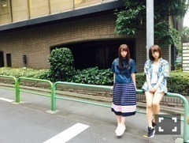
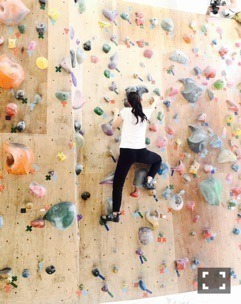

| 2016/08 08 Mon | ひめたん-0o0-その680 |
乃木坂46 2nd写真集
「1時間遅れのI love you.」
発売になりました！
グアムのロケーションが綺麗です
1st写真集がお手元にある方は
見比べても楽しいですねo(^o^)o
ひとりひとりのインタビューもまた
読んでて面白かった～

6日7日は全国ツアー名古屋公演でした
来て下さった皆さん
ありがとうございました！
個人的にはまだまだだな～と
反省点が多く、というか
反省しかなかったのですが
それでも楽しかったですo(^o^)o
皆さんのおかげですありがとう！
今週末仙台、来週福岡と続きます
早いものでツアーも折り返し！
よーし頑張るぞ！
ELOさんオフショット

日曜の夜は、らじらー！サンデー
ゲストは声優アーツに伊波杏樹さん、
小林愛香さん、小宮有紗さん
乃木坂から北野日奈子ちゃんでした！
きいちゃんは単独では初めて。
ライブ終わりでしたが
楽しくお届けできました☆
蘭世、お手紙ありがとうね(´,,•ω•,,｀)
そして、次回から3週間、
らじらー！はお休みになります。
「妄想ダイアリー」という企画を
やっているので
皆さん是非参加してくださいね～＊
詳しくは公式サイトまで
～お知らせ～

雑誌
8/23 BRODY
8/24 ストリートジャック
ラジオ
8/12 よんぱち 48hours
8/20 God Bless Saturday
リリース
9/30 NOGIBINGO!6 BD&DVD
6日発売のTop Yellでは連載ページにて
ボルダリングを体験してきました！
いつかやってみたいなーって思ってたから
楽しかったけれど
次の日の筋肉痛は凄かったな～
それもまたスポーツの醍醐味ですね、
興味がある方は是非やってみてね！
最近お仕事終わってから
今日も上手くいかなかったな～って
落ち込んで帰ることばかり。
気分転換の方法をそろそろ見つけなきゃね、
そうやって自分のこと
上手にコントロールしなきゃ。
(＊´・ω・＊)
コメント(714)
2016/08/08 23:42